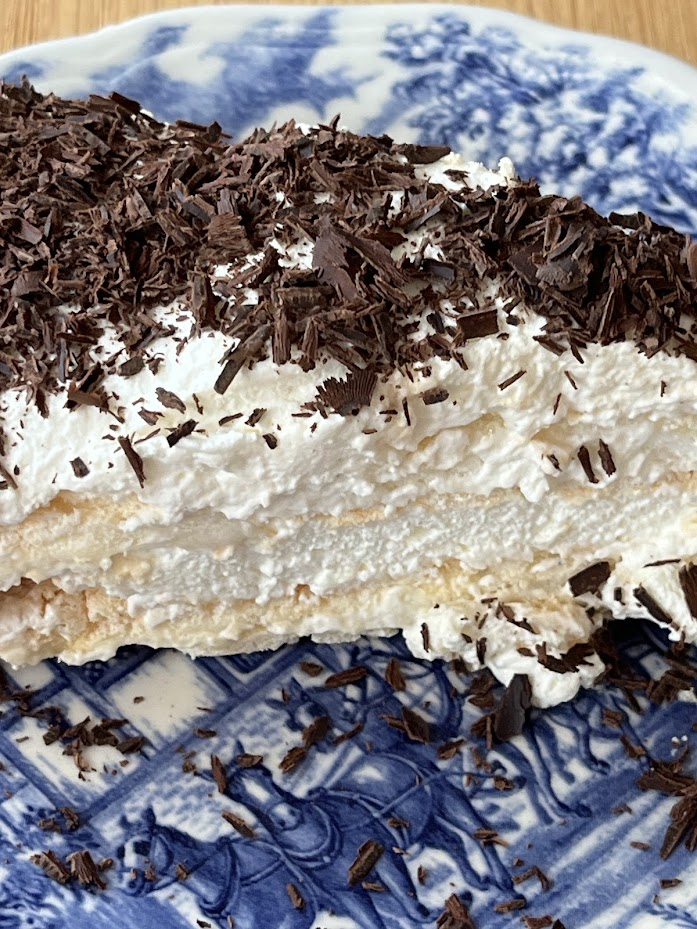
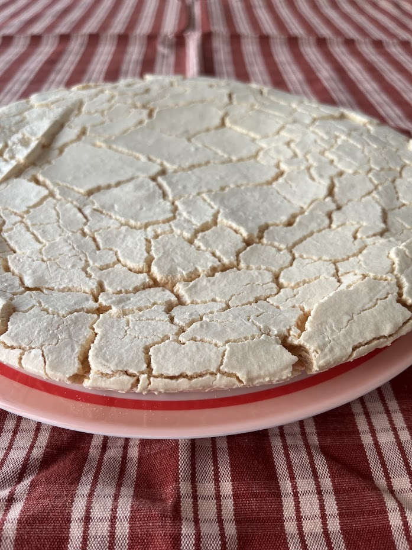

Le “Merveilleux” façon Pierre Marcolini
⏱️ 30–35 min de cuisson
🔥 Facile
👥 Pour 6 personnes



Étapes
- Préchauffez le four à 170°C.
- Battez les blancs doucement en ajoutant le sucre en poudre en trois fois.
- Ajoutez le sucre glace tamisé délicatement à la maryse.
- Pochez la meringue en cercles sur une plaque recouverte de papier sulfurisé.
- Cuisez 30 à 35 minutes jusqu’à obtenir une meringue sèche et croustillante.
- Montez la crème en chantilly avec les 30 g de sucre.
- Réalisez les copeaux de chocolat à l’aide d’un couteau ou d’un économe.
- Montage : recouvrez chaque disque de meringue de chantilly puis parsemez de copeaux de chocolat.